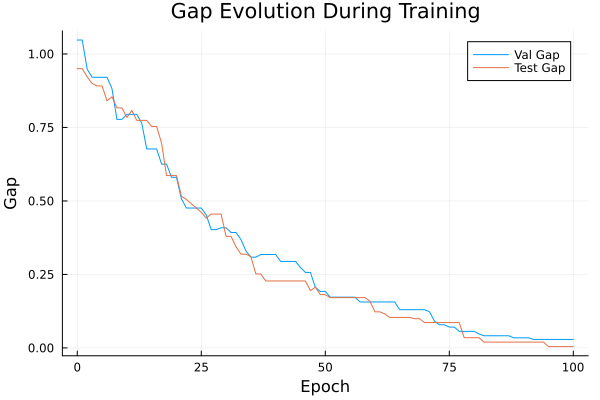
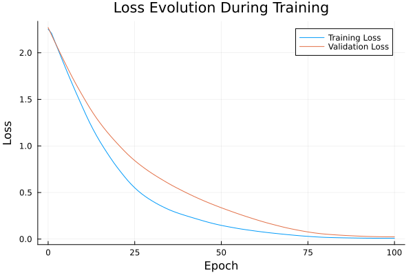

Basic Tutorial: Training with FYL on Argmax Benchmark
This tutorial demonstrates the basic workflow for training a policy using the Perturbed Fenchel-Young Loss algorithm.
Setup
using DecisionFocusedLearningAlgorithms
using DecisionFocusedLearningBenchmarks
using MLUtils: splitobs
using PlotsCreate Benchmark and Data
b = ArgmaxBenchmark()
dataset = generate_dataset(b, 100)
train_data, val_data, test_data = splitobs(dataset; at=(0.3, 0.3, 0.4))(DecisionFocusedLearningBenchmarks.Utils.DataSample{@NamedTuple{}, @NamedTuple{}, Matrix{Float32}, Vector{Float32}, Vector{Float32}}[DataSample(x=Float32[1.37401 -0.0293544 … -0.652929 0.827162; 0.584076 -0.212105 … 1.26219 1.69353; … ; -1.58538 -0.594592 … 0.242334 0.304316; 0.0897705 0.220113 … 0.896781 -0.87763], θ=Float32[-0.305076, 0.0844213, -1.69185, 1.17597, 0.197179, -0.228013, -1.31859, 1.48771, -2.03422, -0.877178], y=Float32[0.0, 0.0, 0.0, 0.0, 0.0, 0.0, 0.0, 1.0, 0.0, 0.0]), DataSample(x=Float32[1.54923 1.01128 … -2.20058 -1.67321; 1.42702 -1.45224 … -0.171502 -1.78977; … ; 0.155132 0.286885 … 3.18998 -1.36902; 0.487521 0.346125 … -1.38358 0.505639], θ=Float32[-2.06193, 2.0098, 1.12797, -0.0282074, 0.255106, -2.18565, -0.965438, -0.785356, -1.42423, 2.12259], y=Float32[0.0, 0.0, 0.0, 0.0, 0.0, 0.0, 0.0, 0.0, 0.0, 1.0]), DataSample(x=Float32[1.15203 -0.357971 … -1.96533 -0.960246; -0.977104 1.47538 … -1.67927 -0.784375; … ; -0.482091 -0.849984 … 1.62825 -0.953459; 1.01491 -1.28839 … -0.059857 0.613024], θ=Float32[0.993146, -0.90551, 1.3746, -0.606102, 0.889935, -1.14882, 0.827525, 1.44185, 1.29327, 0.904362], y=Float32[0.0, 0.0, 0.0, 0.0, 0.0, 0.0, 0.0, 1.0, 0.0, 0.0]), DataSample(x=Float32[0.903115 1.53299 … 0.760313 -1.09175; 1.31933 -0.800005 … -1.58129 1.03361; … ; 0.558569 0.849403 … 0.425595 1.14486; -0.405208 -0.246863 … -0.388584 2.05911], θ=Float32[-1.66453, 0.736618, -0.406683, 0.727668, -2.43763, -1.30074, -2.16963, -0.567917, 0.338426, -1.9297], y=Float32[0.0, 1.0, 0.0, 0.0, 0.0, 0.0, 0.0, 0.0, 0.0, 0.0]), DataSample(x=Float32[-2.46225 -0.416432 … 0.281365 0.954558; 0.472267 1.17361 … -0.365722 -0.746751; … ; 0.496553 0.912258 … -0.0540559 -0.550446; 0.135451 -0.0953543 … 0.883158 1.11134], θ=Float32[-1.05428, -1.69294, 0.63704, 1.83144, 1.47361, -0.528021, 0.254331, -0.614201, 0.154231, 1.09025], y=Float32[0.0, 0.0, 0.0, 1.0, 0.0, 0.0, 0.0, 0.0, 0.0, 0.0]), DataSample(x=Float32[-1.01471 0.418958 … 0.560892 0.144724; 1.77688 -0.275442 … -0.132836 0.461941; … ; -1.11235 0.921968 … 2.21181 0.704913; 0.661723 -0.212451 … -0.0824992 -1.32334], θ=Float32[-1.07878, -0.411531, 0.125423, -0.367208, -2.20067, 0.31831, 0.961004, -0.574949, -1.35193, -0.899047], y=Float32[0.0, 0.0, 0.0, 0.0, 0.0, 0.0, 1.0, 0.0, 0.0, 0.0]), DataSample(x=Float32[-0.0928209 0.651805 … 0.275177 0.768233; 1.01741 -0.601722 … 0.549317 2.5231; … ; -0.470984 -1.64374 … 1.43783 -1.36648; -0.183204 -1.58173 … 0.487282 0.32841], θ=Float32[-0.676773, 1.7045, 2.21071, 1.29137, -0.233081, -0.406848, 0.184039, 1.86368, -2.38604, -0.336718], y=Float32[0.0, 0.0, 1.0, 0.0, 0.0, 0.0, 0.0, 0.0, 0.0, 0.0]), DataSample(x=Float32[0.457451 -0.783771 … -0.872367 -0.339283; 1.10401 -0.465662 … 0.270476 -1.23964; … ; -0.00085319 1.24004 … -0.00713206 -0.771197; 0.209668 0.675468 … -0.682146 -0.695463], θ=Float32[-1.91648, -1.52902, 0.851023, 0.412677, -0.617687, 1.38718, 2.59732, -1.52375, 0.206715, 1.30612], y=Float32[0.0, 0.0, 0.0, 0.0, 0.0, 0.0, 1.0, 0.0, 0.0, 0.0]), DataSample(x=Float32[0.493564 -0.982418 … 0.982867 1.40606; -0.441778 -0.437282 … -0.110491 1.17487; … ; 0.932284 -0.976732 … -0.311036 0.817346; 0.412763 0.732615 … -0.281789 0.869043], θ=Float32[-1.36474, 1.35375, 0.317026, -1.37534, -0.472636, -0.866346, 1.76007, 1.38667, 0.041997, -2.30238], y=Float32[0.0, 0.0, 0.0, 0.0, 0.0, 0.0, 1.0, 0.0, 0.0, 0.0]), DataSample(x=Float32[0.808655 -0.0928275 … 0.657579 0.832793; -2.37483 0.409741 … 1.58538 0.799704; … ; 1.81385 -0.765645 … 0.859238 -0.386522; 0.933652 -0.803608 … -0.226471 0.917285], θ=Float32[0.790549, -1.03491, -1.44136, -1.08733, -0.278831, -1.01217, -2.53204, -0.0608533, -1.86318, 0.205041], y=Float32[1.0, 0.0, 0.0, 0.0, 0.0, 0.0, 0.0, 0.0, 0.0, 0.0]) … DataSample(x=Float32[-0.574104 -0.653276 … -0.0654721 -1.60382; 0.73889 0.6252 … -0.199054 -0.897133; … ; -1.1408 -0.813637 … 1.13861 -1.32238; -1.08053 1.70077 … -0.40071 0.221796], θ=Float32[-0.327467, -1.21056, -0.145017, -0.251681, 1.21758, 0.867443, -0.332258, 0.201336, -0.323776, 1.66299], y=Float32[0.0, 0.0, 0.0, 0.0, 0.0, 0.0, 0.0, 0.0, 0.0, 1.0]), DataSample(x=Float32[0.557801 -0.767758 … 0.202879 0.622584; 1.23781 0.29638 … -1.45091 -1.69338; … ; -0.16064 0.327453 … -1.12253 -1.40668; 0.204467 -0.12484 … 1.50704 -1.06115], θ=Float32[-0.302055, -1.35916, -1.9652, -1.58101, -0.98671, 1.54965, 2.30801, -1.13619, 2.18253, 1.75864], y=Float32[0.0, 0.0, 0.0, 0.0, 0.0, 0.0, 1.0, 0.0, 0.0, 0.0]), DataSample(x=Float32[-0.688219 1.3422 … 0.240247 0.434597; -0.326224 -0.936103 … -0.422117 -1.095; … ; 2.74195 0.868231 … 0.819912 -1.08506; -0.719694 -0.563009 … -0.287017 1.2802], θ=Float32[-3.07813, -0.563692, 0.605269, 0.365254, -0.515263, 1.03669, -3.77678, -0.405685, -0.848104, 0.827098], y=Float32[0.0, 0.0, 0.0, 0.0, 0.0, 1.0, 0.0, 0.0, 0.0, 0.0]), DataSample(x=Float32[-0.124576 -0.181461 … 1.91405 -0.903711; 0.576824 -0.318488 … 2.31043 -0.214673; … ; 1.74304 0.751439 … -0.242261 -1.83789; 0.344443 2.04911 … 1.24744 -0.637428], θ=Float32[-3.01195, 0.0374093, 2.42635, 0.0937919, 1.11661, -0.828155, -1.20717, 0.339816, -2.55003, 2.98302], y=Float32[0.0, 0.0, 0.0, 0.0, 0.0, 0.0, 0.0, 0.0, 0.0, 1.0]), DataSample(x=Float32[0.304681 0.991173 … 0.891586 0.28528; -1.02423 0.505944 … -0.377364 -0.733826; … ; -0.75323 -2.34517 … 0.475649 1.72525; -1.31909 -0.898542 … 1.06399 0.310722], θ=Float32[2.07145, 0.46562, 0.144194, -1.88148, -1.11341, -0.71551, -0.633694, -0.64481, -0.375703, -0.864943], y=Float32[1.0, 0.0, 0.0, 0.0, 0.0, 0.0, 0.0, 0.0, 0.0, 0.0]), DataSample(x=Float32[-0.450633 1.09203 … 1.27559 1.30733; 0.414995 -0.153186 … 1.36327 -1.73026; … ; -0.725937 -0.227707 … 0.929522 0.446414; -0.758776 -0.266296 … 0.826046 -0.568101], θ=Float32[-0.126061, 1.17061, 1.86989, 1.73002, -0.830977, 2.13413, -0.397229, 0.810309, -2.49935, 1.03715], y=Float32[0.0, 0.0, 0.0, 0.0, 0.0, 1.0, 0.0, 0.0, 0.0, 0.0]), DataSample(x=Float32[-0.580289 1.59292 … -0.938052 1.03399; -1.03892 -0.0910429 … -0.909581 -1.7077; … ; 0.441685 0.132761 … 0.859664 0.815803; 0.482085 -0.7759 … 2.30616 1.28332], θ=Float32[-0.0285346, -0.0117538, -0.0605936, -0.543158, -0.276159, -1.16777, -1.16342, 0.841968, -0.350864, 0.984896], y=Float32[0.0, 0.0, 0.0, 0.0, 0.0, 0.0, 0.0, 0.0, 0.0, 1.0]), DataSample(x=Float32[-0.208847 2.89872 … -1.02408 -0.413047; -0.530026 -0.261603 … 0.332633 -0.29946; … ; 0.302362 -0.80995 … -2.29444 1.86062; 0.351081 0.419388 … -1.80661 0.99123], θ=Float32[0.361427, -0.169385, 0.363559, 1.9723, -0.0929425, 0.0830945, 0.0169777, 1.04178, 2.11014, -0.729227], y=Float32[0.0, 0.0, 0.0, 0.0, 0.0, 0.0, 0.0, 0.0, 1.0, 0.0]), DataSample(x=Float32[-1.99718 -0.180884 … 0.853881 -0.0465075; -0.634202 0.0400716 … -0.000957058 -0.34695; … ; -0.413653 0.932319 … 1.24792 1.15571; -0.30812 -0.549119 … -0.0624325 -1.08569], θ=Float32[1.32058, -1.00979, 1.63194, -3.00514, 0.00131708, -1.82551, 0.144191, -2.32586, 0.0898526, -0.177398], y=Float32[0.0, 0.0, 1.0, 0.0, 0.0, 0.0, 0.0, 0.0, 0.0, 0.0]), DataSample(x=Float32[-0.00368556 -1.84375 … 1.61922 -2.19953; -0.68242 -0.94059 … 0.0714335 0.795383; … ; 0.17456 -0.357686 … 0.0768994 2.47503; -0.0114794 -0.175572 … -1.45092 2.38907], θ=Float32[-1.12912, 1.86174, 1.39293, -0.193068, -1.12451, 0.694764, -0.717534, 0.341142, -0.186634, -3.40059], y=Float32[0.0, 1.0, 0.0, 0.0, 0.0, 0.0, 0.0, 0.0, 0.0, 0.0])], DecisionFocusedLearningBenchmarks.Utils.DataSample{@NamedTuple{}, @NamedTuple{}, Matrix{Float32}, Vector{Float32}, Vector{Float32}}[DataSample(x=Float32[1.54033 1.04514 … 2.76698 -0.0563856; -1.9343 0.63207 … 1.24739 1.14542; … ; -0.22313 0.17855 … -1.01241 -1.68901; 1.02738 -0.245792 … 0.614075 0.737779], θ=Float32[1.40737, -1.51617, -1.90995, 1.46734, 0.129744, 0.525544, -4.40682, -3.61952, -1.29586, -0.766857], y=Float32[0.0, 0.0, 0.0, 1.0, 0.0, 0.0, 0.0, 0.0, 0.0, 0.0]), DataSample(x=Float32[-0.639927 -0.299141 … 1.37598 0.953609; -0.0751608 -0.245331 … 1.38198 -0.957365; … ; 0.14299 0.385285 … 1.54561 0.236275; -0.209224 0.834615 … -0.471782 -1.75755], θ=Float32[-0.825447, 0.271888, 1.69563, 2.17863, 1.55, -1.12579, -1.2159, -1.26773, -3.05457, 0.808553], y=Float32[0.0, 0.0, 0.0, 1.0, 0.0, 0.0, 0.0, 0.0, 0.0, 0.0]), DataSample(x=Float32[0.0454923 -1.48747 … -0.706908 0.00712202; 0.292749 0.690685 … -0.622352 0.314682; … ; 1.34259 0.587774 … -0.781971 0.594877; 0.969606 -0.936297 … 2.33695 -1.66345], θ=Float32[-1.24669, 0.527104, 0.42593, -0.46516, -1.44475, -0.717774, -0.170877, -0.356191, 0.309813, 0.564888], y=Float32[0.0, 0.0, 0.0, 0.0, 0.0, 0.0, 0.0, 0.0, 0.0, 1.0]), DataSample(x=Float32[-0.233335 1.0813 … -0.172648 -0.992756; 0.127975 -1.53772 … 0.230154 0.262446; … ; 0.820772 1.53003 … -0.116502 0.696689; -0.12215 -0.722809 … -0.300191 -0.87801], θ=Float32[-0.886055, -0.3933, -0.626914, 1.30655, 0.542899, -0.10675, 0.481042, 0.116266, 1.66397f-5, 1.24125], y=Float32[0.0, 0.0, 0.0, 1.0, 0.0, 0.0, 0.0, 0.0, 0.0, 0.0]), DataSample(x=Float32[-1.43168 -0.651655 … -1.91035 -0.0501648; 0.189998 0.16809 … -0.505385 -1.85304; … ; -0.7569 0.294047 … -0.534298 -0.669243; -0.513321 -0.692373 … -1.66529 0.00663982], θ=Float32[0.697213, -1.24901, -0.42104, -0.963596, 2.6466, 1.70666, 0.374078, 0.429838, 2.18865, 2.02321], y=Float32[0.0, 0.0, 0.0, 0.0, 1.0, 0.0, 0.0, 0.0, 0.0, 0.0]), DataSample(x=Float32[-0.154647 0.154109 … 0.668364 -0.648244; 1.21687 -1.02176 … -0.716628 -0.322434; … ; -0.97421 -1.81123 … 0.249823 -1.22752; 0.502921 2.69712 … -1.06824 0.600655], θ=Float32[-0.982014, 2.25382, 0.570641, -3.31338, -0.0715944, -0.357201, 0.469264, 0.276469, 0.729103, 1.91154], y=Float32[0.0, 1.0, 0.0, 0.0, 0.0, 0.0, 0.0, 0.0, 0.0, 0.0]), DataSample(x=Float32[0.355277 -0.399126 … -0.0100221 1.41787; 0.984366 -1.03652 … -0.929708 -0.180181; … ; 0.810324 -0.60109 … -0.665442 -0.266755; 1.04733 -0.504609 … 0.914352 0.657758], θ=Float32[-1.80835, 1.90126, 1.53364, 1.72073, 0.630212, -0.0461414, 0.676909, 0.755075, 2.0105, -1.93007], y=Float32[0.0, 0.0, 0.0, 0.0, 0.0, 0.0, 0.0, 0.0, 1.0, 0.0]), DataSample(x=Float32[-0.908896 2.10863 … -1.17151 0.224577; 3.06966 2.31632 … -1.07386 0.726595; … ; -1.69664 0.379224 … -0.910609 3.12711; 0.193873 0.613541 … -0.959268 -0.478064], θ=Float32[-2.33246, -1.68297, -1.46342, -2.40483, 0.191056, 0.483336, 2.03865, -1.55643, 1.6234, -2.83823], y=Float32[0.0, 0.0, 0.0, 0.0, 0.0, 0.0, 1.0, 0.0, 0.0, 0.0]), DataSample(x=Float32[-1.52251 0.117526 … 0.449786 -0.534405; -0.736251 1.14442 … -0.818684 0.416925; … ; 0.0453141 0.960549 … 1.33355 -0.568202; 0.256161 -1.31792 … -0.706389 -0.055181], θ=Float32[2.03888, -1.44628, 0.141251, -0.715889, 1.84381, -2.01168, -1.2394, 2.05096, -0.391283, 0.497445], y=Float32[0.0, 0.0, 0.0, 0.0, 0.0, 0.0, 0.0, 1.0, 0.0, 0.0]), DataSample(x=Float32[0.559278 -0.35598 … 1.00469 0.316075; 0.511656 0.647494 … 1.10784 -0.274182; … ; 1.05599 -0.539735 … 0.254498 -1.17475; 0.817968 0.542111 … 1.0453 0.57912], θ=Float32[-1.21738, -0.493915, -0.458251, -2.23464, 0.684641, 1.21203, -0.839342, -4.147, -2.17491, 0.158298], y=Float32[0.0, 0.0, 0.0, 0.0, 0.0, 1.0, 0.0, 0.0, 0.0, 0.0]) … DataSample(x=Float32[0.535654 -0.351908 … -0.355235 -0.855093; 0.894274 -0.106905 … -0.770721 -0.0172308; … ; -0.993644 -1.67648 … 0.141221 0.650801; -1.20734 -0.208551 … 0.0309484 -0.486011], θ=Float32[-0.597646, 3.18613, -0.601575, -1.36835, 0.502841, -1.87941, 1.5731, -0.172149, 0.810708, -0.297829], y=Float32[0.0, 1.0, 0.0, 0.0, 0.0, 0.0, 0.0, 0.0, 0.0, 0.0]), DataSample(x=Float32[-0.0640152 -1.51466 … 1.04522 -0.228545; 0.283608 0.0348269 … -0.370089 -0.598433; … ; 0.475059 -1.29631 … 1.08381 -0.52535; -0.6044 0.050891 … -1.31674 0.606075], θ=Float32[0.0260916, 0.819276, 1.10219, 0.0134703, -1.28094, -0.356752, -0.32983, 2.13115, -1.3481, 0.763081], y=Float32[0.0, 0.0, 0.0, 0.0, 0.0, 0.0, 0.0, 1.0, 0.0, 0.0]), DataSample(x=Float32[-1.04582 0.821023 … 0.238657 -0.580378; -0.440407 -1.57972 … 0.825026 2.02042; … ; 0.0177696 -0.373676 … -2.46532 -0.29226; 0.169961 1.98661 … 0.613601 -1.49092], θ=Float32[-0.285696, 1.26133, 1.72667, 1.47264, -0.126708, -2.04811, 0.061683, 0.815144, 1.09105, -1.9748], y=Float32[0.0, 0.0, 1.0, 0.0, 0.0, 0.0, 0.0, 0.0, 0.0, 0.0]), DataSample(x=Float32[0.146084 -0.360531 … -1.48307 0.840546; -0.447259 -1.0086 … 0.536903 0.90706; … ; -0.262368 -0.855601 … -0.653939 0.0554346; -1.55966 0.0896752 … 0.951155 0.0704752], θ=Float32[0.955911, 0.863089, 0.54266, 3.28178, 0.738681, 0.5744, 3.05032, -1.52206, 0.0674217, -2.30453], y=Float32[0.0, 0.0, 0.0, 1.0, 0.0, 0.0, 0.0, 0.0, 0.0, 0.0]), DataSample(x=Float32[-0.0990667 -1.31883 … -0.694132 0.421538; 1.93234 2.85076 … 0.101797 0.47714; … ; 0.0736862 1.36073 … 1.1416 0.99068; 0.53127 0.678592 … -1.23884 0.258795], θ=Float32[-0.917515, -2.91028, -0.603829, 1.45905, 1.22039, -0.999471, -1.62289, -3.11592, -0.340466, -1.62829], y=Float32[0.0, 0.0, 0.0, 1.0, 0.0, 0.0, 0.0, 0.0, 0.0, 0.0]), DataSample(x=Float32[-0.593016 -0.826196 … -0.131417 0.65013; -1.39307 1.27521 … 0.705793 -0.720503; … ; 0.43207 -1.0783 … -0.939962 -0.294279; 2.03937 0.449739 … 0.353368 0.428804], θ=Float32[1.0521, -0.328192, -0.736551, -1.44916, 0.630399, -1.02627, -2.2071, -0.379764, -0.25556, -0.274904], y=Float32[1.0, 0.0, 0.0, 0.0, 0.0, 0.0, 0.0, 0.0, 0.0, 0.0]), DataSample(x=Float32[-0.192247 2.70716 … 0.219889 0.591776; -0.834622 0.409169 … 1.1284 -1.64617; … ; 2.1395 1.71065 … 0.103909 -0.684603; -0.938951 -1.73671 … 0.459794 0.781713], θ=Float32[-0.984682, -0.929494, 0.475498, 0.472075, 0.703484, -1.23936, -0.461455, -2.05672, -1.94302, 0.375585], y=Float32[0.0, 0.0, 0.0, 0.0, 1.0, 0.0, 0.0, 0.0, 0.0, 0.0]), DataSample(x=Float32[-0.410748 0.700341 … 0.809184 -0.664584; -1.02095 0.0925689 … -0.792691 0.223438; … ; -0.564669 -1.25256 … -0.00870342 -1.85394; -1.29106 0.556825 … -0.31177 -0.965776], θ=Float32[0.0891379, 0.033008, 0.0788607, 0.979803, 0.389455, 0.610528, 0.220328, -4.00609, -0.888352, 1.73335], y=Float32[0.0, 0.0, 0.0, 0.0, 0.0, 0.0, 0.0, 0.0, 0.0, 1.0]), DataSample(x=Float32[1.08662 -1.66379 … 0.271022 -0.174917; -0.846829 -2.19638 … 1.76495 0.324108; … ; -0.977894 -0.204104 … -1.11492 0.121133; -0.0185398 2.2466 … -1.70902 -1.707], θ=Float32[0.409334, 2.95984, -1.85748, 0.430023, 0.853763, 1.51826, 1.35972, -4.21244, -0.191635, 0.0745904], y=Float32[0.0, 1.0, 0.0, 0.0, 0.0, 0.0, 0.0, 0.0, 0.0, 0.0]), DataSample(x=Float32[0.601502 -0.431508 … -0.617131 -0.254202; 1.6926 -2.63151 … -0.594546 0.300299; … ; 1.17267 -0.255718 … -0.294986 -0.233902; 0.0813498 2.63661 … 0.710096 0.396534], θ=Float32[-2.41226, 1.57878, 1.10841, -0.756943, -2.65856, 2.00385, 1.2978, -0.400841, 1.65566, 0.236047], y=Float32[0.0, 0.0, 0.0, 0.0, 0.0, 1.0, 0.0, 0.0, 0.0, 0.0])], DecisionFocusedLearningBenchmarks.Utils.DataSample{@NamedTuple{}, @NamedTuple{}, Matrix{Float32}, Vector{Float32}, Vector{Float32}}[DataSample(x=Float32[0.483233 -1.50443 … 0.732125 0.384277; 0.697051 -1.19119 … 0.551278 -0.930909; … ; 1.85193 -0.577515 … 0.108109 0.346828; -0.733166 -1.16351 … -0.448088 1.12717], θ=Float32[-2.18559, 2.14247, -1.25804, 1.21695, 0.0676758, -0.125747, -4.24347, -1.36453, -1.38678, -0.054302], y=Float32[0.0, 1.0, 0.0, 0.0, 0.0, 0.0, 0.0, 0.0, 0.0, 0.0]), DataSample(x=Float32[-0.680535 0.372377 … -0.390376 0.288829; -0.69867 0.412622 … -0.197035 -3.11539; … ; 0.718924 -1.16193 … -1.06397 0.233107; 1.20895 1.73505 … -0.816903 0.260892], θ=Float32[0.584568, 0.396138, -0.515988, 0.338883, -1.52727, -0.444025, -0.374029, 1.77182, 1.03888, 2.3713], y=Float32[0.0, 0.0, 0.0, 0.0, 0.0, 0.0, 0.0, 0.0, 0.0, 1.0]), DataSample(x=Float32[0.273826 -0.920894 … 0.105695 0.225271; 0.778844 -1.00671 … -0.737847 -0.435446; … ; 1.20183 1.38765 … -0.416709 0.326074; -0.0281086 0.27301 … 1.26468 -0.45589], θ=Float32[-2.98464, 0.512087, 0.377852, 0.0339839, -0.633862, 1.36691, 0.0983615, 0.950608, 1.83523, -0.155248], y=Float32[0.0, 0.0, 0.0, 0.0, 0.0, 0.0, 0.0, 0.0, 1.0, 0.0]), DataSample(x=Float32[-0.775712 1.79733 … -0.318799 2.27831; 2.66982 1.28876 … -0.432948 -0.819838; … ; 0.397678 -0.613339 … -0.0986508 -1.81401; -0.577268 -0.708651 … 0.876398 -0.125411], θ=Float32[-2.20711, 0.625365, -0.278634, -0.322939, -0.8452, -0.659871, -1.51362, -0.389025, 0.438437, 1.4828], y=Float32[0.0, 0.0, 0.0, 0.0, 0.0, 0.0, 0.0, 0.0, 0.0, 1.0]), DataSample(x=Float32[0.237442 -0.800189 … -0.0936796 0.255082; 1.29998 0.83786 … 1.14134 0.768917; … ; 0.775791 0.483601 … -1.16643 1.19425; 0.0906936 -0.586113 … -0.774287 -1.05084], θ=Float32[-2.42694, -2.50321, 3.08426, 1.83995, -0.66147, -0.0860653, 0.302992, 0.473611, 0.435263, -0.845386], y=Float32[0.0, 0.0, 1.0, 0.0, 0.0, 0.0, 0.0, 0.0, 0.0, 0.0]), DataSample(x=Float32[0.16843 -0.707642 … 1.80713 0.349817; -0.164878 -0.299386 … 0.423711 -0.192142; … ; 2.10246 -1.31924 … 0.236389 1.16759; 0.718825 0.275041 … -0.623405 1.10011], θ=Float32[-2.04569, 0.606723, -1.12931, 2.01859, -1.74036, -0.288663, -3.28022, 0.417637, 0.655899, -0.492565], y=Float32[0.0, 0.0, 0.0, 1.0, 0.0, 0.0, 0.0, 0.0, 0.0, 0.0]), DataSample(x=Float32[-0.46593 -1.74726 … -0.331147 -1.07134; -1.20476 1.6127 … 1.65875 -1.62047; … ; -0.588904 -0.947672 … -0.588815 -0.681392; -0.271468 -0.597914 … 0.500062 0.720569], θ=Float32[1.59771, -0.481777, -0.0360204, 0.104535, -0.184243, -1.45414, 1.7266, -4.46387, -1.2184, 1.85994], y=Float32[0.0, 0.0, 0.0, 0.0, 0.0, 0.0, 0.0, 0.0, 0.0, 1.0]), DataSample(x=Float32[0.0901382 -0.96921 … -1.18613 0.262015; 1.22148 -0.601471 … 0.188246 1.00607; … ; -1.26589 -1.13439 … -1.26175 -0.566737; -0.69163 1.23887 … 0.993351 -0.475899], θ=Float32[-0.603516, 1.42336, -0.814569, -0.42007, 0.575293, -0.121638, 2.64059, -1.91683, 0.653742, -0.592983], y=Float32[0.0, 0.0, 0.0, 0.0, 0.0, 0.0, 1.0, 0.0, 0.0, 0.0]), DataSample(x=Float32[-0.766748 -0.562192 … -0.738304 -1.63527; 1.18331 -0.257255 … 0.730169 1.19478; … ; -0.968433 -0.633545 … -0.992845 0.431573; 0.274201 -1.08343 … -0.502218 1.09146], θ=Float32[-1.12477, 1.02415, -3.51789, -1.04481, -0.355653, -1.62126, -2.06177, -2.33738, -1.28773, -0.546402], y=Float32[0.0, 1.0, 0.0, 0.0, 0.0, 0.0, 0.0, 0.0, 0.0, 0.0]), DataSample(x=Float32[0.0614895 1.36457 … -0.169227 0.346802; -0.904411 0.923795 … 1.096 0.882423; … ; -1.91348 -1.24094 … 0.506351 -0.933743; 0.300677 0.540569 … -1.04706 1.27621], θ=Float32[2.37733, -1.25257, -3.16504, -0.223216, -0.295585, 0.803517, -0.345155, -0.645079, -0.221116, 0.0674951], y=Float32[1.0, 0.0, 0.0, 0.0, 0.0, 0.0, 0.0, 0.0, 0.0, 0.0]) … DataSample(x=Float32[-0.0845331 -0.851896 … -0.535726 0.410801; 0.0948908 0.316843 … -1.87462 -0.545258; … ; -1.71123 0.497462 … -0.0628677 -0.0920371; -1.63553 -1.22818 … -0.684945 1.65338], θ=Float32[1.93686, -0.565655, 0.753237, -0.574692, -0.339776, -2.60805, 1.34888, -1.71276, 1.92749, 0.32198], y=Float32[1.0, 0.0, 0.0, 0.0, 0.0, 0.0, 0.0, 0.0, 0.0, 0.0]), DataSample(x=Float32[0.683731 0.816541 … 0.571797 2.73479; 0.529617 -0.9618 … 0.120845 -1.76791; … ; -0.954233 -1.72824 … -0.824204 1.73455; 0.902124 0.269913 … -0.581441 1.43505], θ=Float32[-0.578467, 2.11806, -1.99005, 0.328015, -0.350595, -0.631086, -1.25705, -0.0671792, 0.190428, 0.31341], y=Float32[0.0, 1.0, 0.0, 0.0, 0.0, 0.0, 0.0, 0.0, 0.0, 0.0]), DataSample(x=Float32[0.129864 0.0463145 … -1.92989 -2.04818; -0.694107 0.0855566 … -0.305653 -0.0594356; … ; 0.447463 0.47814 … 0.0710849 -0.258542; 1.23632 -1.30799 … -2.10924 0.256122], θ=Float32[0.849594, -0.560628, 0.935068, 0.10406, 0.384701, -1.417, -0.971631, 1.62977, 2.27522, 1.14492], y=Float32[0.0, 0.0, 0.0, 0.0, 0.0, 0.0, 0.0, 0.0, 1.0, 0.0]), DataSample(x=Float32[0.143628 -1.11754 … -1.02097 -0.95636; -0.805772 -0.53597 … -0.426201 -2.42595; … ; 0.987982 0.933364 … -1.93125 -0.232798; -1.46874 -1.09063 … 0.195588 0.0842153], θ=Float32[0.851375, 0.167047, -0.380611, -0.414485, -0.242056, 0.186493, -1.13711, -2.27458, 0.837547, 4.19604], y=Float32[0.0, 0.0, 0.0, 0.0, 0.0, 0.0, 0.0, 0.0, 0.0, 1.0]), DataSample(x=Float32[-1.07242 0.854996 … -0.316022 0.249742; -0.819492 1.14915 … -1.39581 0.764618; … ; -0.773882 -0.285196 … -0.988846 0.799425; 0.866653 0.116334 … 0.246934 1.51308], θ=Float32[0.707188, 0.381137, 0.0271747, 0.272904, -2.41796, -0.209043, -0.261096, -1.95176, 1.67185, -2.62015], y=Float32[0.0, 0.0, 0.0, 0.0, 0.0, 0.0, 0.0, 0.0, 1.0, 0.0]), DataSample(x=Float32[1.35583 -0.852736 … 0.879271 1.11917; 0.120321 -0.69158 … 0.534696 -1.30422; … ; 0.34498 1.67636 … -0.0865664 1.29127; -0.573654 -0.584824 … 0.375398 -1.33299], θ=Float32[-1.32659, 0.528626, -0.602765, -2.57466, 1.03129, 0.272349, -0.0265651, -0.822463, -1.21366, 0.314843], y=Float32[0.0, 0.0, 0.0, 0.0, 1.0, 0.0, 0.0, 0.0, 0.0, 0.0]), DataSample(x=Float32[0.504158 -1.15973 … -0.899044 0.816778; -0.984553 0.223187 … -0.286626 0.658493; … ; 0.479989 0.888554 … 1.16852 -2.04864; 0.124418 0.0439152 … -1.34887 0.139122], θ=Float32[1.63837, -0.414218, 1.00814, 0.881391, 0.453412, 0.223781, 1.65176, 1.70613, 0.0788104, 1.45119], y=Float32[0.0, 0.0, 0.0, 0.0, 0.0, 0.0, 0.0, 1.0, 0.0, 0.0]), DataSample(x=Float32[0.125427 1.21105 … 0.911698 -1.5152; 0.317323 -0.416902 … -1.40792 -0.276297; … ; 0.00491946 -0.276179 … 1.18146 -0.183218; -0.709678 -0.409786 … -1.0198 0.354442], θ=Float32[-0.0260248, 0.705428, -0.82968, -1.31372, 0.566605, 2.07873, 0.467671, 0.74063, 0.816761, 0.073662], y=Float32[0.0, 0.0, 0.0, 0.0, 0.0, 1.0, 0.0, 0.0, 0.0, 0.0]), DataSample(x=Float32[-0.0995249 0.203465 … -0.00371188 1.21991; 0.2495 -1.29552 … 0.92219 0.448043; … ; -0.588952 -0.397147 … -1.28103 0.904187; -0.112399 -0.0239375 … -0.954108 0.0175449], θ=Float32[-0.0803876, 1.39055, -3.11048, -2.52331, -0.478078, -1.33447, -0.897794, 0.551667, -0.601959, -1.72908], y=Float32[0.0, 1.0, 0.0, 0.0, 0.0, 0.0, 0.0, 0.0, 0.0, 0.0]), DataSample(x=Float32[-0.421232 -0.250615 … 0.342386 0.471434; -0.0252294 -1.28544 … 1.44657 -0.502422; … ; -0.513426 0.537438 … 1.48509 0.0411748; -1.86464 -0.868919 … 1.02765 0.342755], θ=Float32[1.33551, 1.67504, -0.648991, 1.54921, -0.593166, -1.82296, 1.71871, -0.132857, -3.00538, -0.241684], y=Float32[0.0, 0.0, 0.0, 0.0, 0.0, 0.0, 1.0, 0.0, 0.0, 0.0])], DecisionFocusedLearningBenchmarks.Utils.DataSample{@NamedTuple{}, @NamedTuple{}, Matrix{Float32}, Vector{Float32}, Vector{Float32}}[])Create Policy
model = generate_statistical_model(b; seed=0)
maximizer = generate_maximizer(b)
policy = DFLPolicy(model, maximizer)DFLPolicy{Flux.Chain{Tuple{Flux.Dense{typeof(identity), Matrix{Float32}, Bool}, typeof(vec)}}, typeof(DecisionFocusedLearningBenchmarks.Argmax.one_hot_argmax)}(Chain(Dense(5 => 1; bias=false), vec), DecisionFocusedLearningBenchmarks.Argmax.one_hot_argmax)Configure Algorithm
algorithm = PerturbedFenchelYoungLossImitation(;
nb_samples=10, ε=0.1, threaded=true, seed=0
)PerturbedFenchelYoungLossImitation{Optimisers.Adam{Float64, Tuple{Float64, Float64}, Float64}, Int64}(10, 0.1, true, Optimisers.Adam(eta=0.001, beta=(0.9, 0.999), epsilon=1.0e-8), 0, false)Define Metrics to track during training
validation_loss_metric = FYLLossMetric(val_data, :validation_loss)
val_gap_metric = FunctionMetric(:val_gap, val_data) do ctx, data
return compute_gap(b, data, ctx.policy.statistical_model, ctx.policy.maximizer)
end
test_gap_metric = FunctionMetric(:test_gap, test_data) do ctx, data
return compute_gap(b, data, ctx.policy.statistical_model, ctx.policy.maximizer)
end
metrics = (validation_loss_metric, val_gap_metric, test_gap_metric)(FYLLossMetric{SubArray{DecisionFocusedLearningBenchmarks.Utils.DataSample{@NamedTuple{}, @NamedTuple{}, Matrix{Float32}, Vector{Float32}, Vector{Float32}}, 1, Vector{DecisionFocusedLearningBenchmarks.Utils.DataSample{@NamedTuple{}, @NamedTuple{}, Matrix{Float32}, Vector{Float32}, Vector{Float32}}}, Tuple{UnitRange{Int64}}, true}}(DecisionFocusedLearningBenchmarks.Utils.DataSample{@NamedTuple{}, @NamedTuple{}, Matrix{Float32}, Vector{Float32}, Vector{Float32}}[DataSample(x=Float32[1.54033 1.04514 … 2.76698 -0.0563856; -1.9343 0.63207 … 1.24739 1.14542; … ; -0.22313 0.17855 … -1.01241 -1.68901; 1.02738 -0.245792 … 0.614075 0.737779], θ=Float32[1.40737, -1.51617, -1.90995, 1.46734, 0.129744, 0.525544, -4.40682, -3.61952, -1.29586, -0.766857], y=Float32[0.0, 0.0, 0.0, 1.0, 0.0, 0.0, 0.0, 0.0, 0.0, 0.0]), DataSample(x=Float32[-0.639927 -0.299141 … 1.37598 0.953609; -0.0751608 -0.245331 … 1.38198 -0.957365; … ; 0.14299 0.385285 … 1.54561 0.236275; -0.209224 0.834615 … -0.471782 -1.75755], θ=Float32[-0.825447, 0.271888, 1.69563, 2.17863, 1.55, -1.12579, -1.2159, -1.26773, -3.05457, 0.808553], y=Float32[0.0, 0.0, 0.0, 1.0, 0.0, 0.0, 0.0, 0.0, 0.0, 0.0]), DataSample(x=Float32[0.0454923 -1.48747 … -0.706908 0.00712202; 0.292749 0.690685 … -0.622352 0.314682; … ; 1.34259 0.587774 … -0.781971 0.594877; 0.969606 -0.936297 … 2.33695 -1.66345], θ=Float32[-1.24669, 0.527104, 0.42593, -0.46516, -1.44475, -0.717774, -0.170877, -0.356191, 0.309813, 0.564888], y=Float32[0.0, 0.0, 0.0, 0.0, 0.0, 0.0, 0.0, 0.0, 0.0, 1.0]), DataSample(x=Float32[-0.233335 1.0813 … -0.172648 -0.992756; 0.127975 -1.53772 … 0.230154 0.262446; … ; 0.820772 1.53003 … -0.116502 0.696689; -0.12215 -0.722809 … -0.300191 -0.87801], θ=Float32[-0.886055, -0.3933, -0.626914, 1.30655, 0.542899, -0.10675, 0.481042, 0.116266, 1.66397f-5, 1.24125], y=Float32[0.0, 0.0, 0.0, 1.0, 0.0, 0.0, 0.0, 0.0, 0.0, 0.0]), DataSample(x=Float32[-1.43168 -0.651655 … -1.91035 -0.0501648; 0.189998 0.16809 … -0.505385 -1.85304; … ; -0.7569 0.294047 … -0.534298 -0.669243; -0.513321 -0.692373 … -1.66529 0.00663982], θ=Float32[0.697213, -1.24901, -0.42104, -0.963596, 2.6466, 1.70666, 0.374078, 0.429838, 2.18865, 2.02321], y=Float32[0.0, 0.0, 0.0, 0.0, 1.0, 0.0, 0.0, 0.0, 0.0, 0.0]), DataSample(x=Float32[-0.154647 0.154109 … 0.668364 -0.648244; 1.21687 -1.02176 … -0.716628 -0.322434; … ; -0.97421 -1.81123 … 0.249823 -1.22752; 0.502921 2.69712 … -1.06824 0.600655], θ=Float32[-0.982014, 2.25382, 0.570641, -3.31338, -0.0715944, -0.357201, 0.469264, 0.276469, 0.729103, 1.91154], y=Float32[0.0, 1.0, 0.0, 0.0, 0.0, 0.0, 0.0, 0.0, 0.0, 0.0]), DataSample(x=Float32[0.355277 -0.399126 … -0.0100221 1.41787; 0.984366 -1.03652 … -0.929708 -0.180181; … ; 0.810324 -0.60109 … -0.665442 -0.266755; 1.04733 -0.504609 … 0.914352 0.657758], θ=Float32[-1.80835, 1.90126, 1.53364, 1.72073, 0.630212, -0.0461414, 0.676909, 0.755075, 2.0105, -1.93007], y=Float32[0.0, 0.0, 0.0, 0.0, 0.0, 0.0, 0.0, 0.0, 1.0, 0.0]), DataSample(x=Float32[-0.908896 2.10863 … -1.17151 0.224577; 3.06966 2.31632 … -1.07386 0.726595; … ; -1.69664 0.379224 … -0.910609 3.12711; 0.193873 0.613541 … -0.959268 -0.478064], θ=Float32[-2.33246, -1.68297, -1.46342, -2.40483, 0.191056, 0.483336, 2.03865, -1.55643, 1.6234, -2.83823], y=Float32[0.0, 0.0, 0.0, 0.0, 0.0, 0.0, 1.0, 0.0, 0.0, 0.0]), DataSample(x=Float32[-1.52251 0.117526 … 0.449786 -0.534405; -0.736251 1.14442 … -0.818684 0.416925; … ; 0.0453141 0.960549 … 1.33355 -0.568202; 0.256161 -1.31792 … -0.706389 -0.055181], θ=Float32[2.03888, -1.44628, 0.141251, -0.715889, 1.84381, -2.01168, -1.2394, 2.05096, -0.391283, 0.497445], y=Float32[0.0, 0.0, 0.0, 0.0, 0.0, 0.0, 0.0, 1.0, 0.0, 0.0]), DataSample(x=Float32[0.559278 -0.35598 … 1.00469 0.316075; 0.511656 0.647494 … 1.10784 -0.274182; … ; 1.05599 -0.539735 … 0.254498 -1.17475; 0.817968 0.542111 … 1.0453 0.57912], θ=Float32[-1.21738, -0.493915, -0.458251, -2.23464, 0.684641, 1.21203, -0.839342, -4.147, -2.17491, 0.158298], y=Float32[0.0, 0.0, 0.0, 0.0, 0.0, 1.0, 0.0, 0.0, 0.0, 0.0]) … DataSample(x=Float32[0.535654 -0.351908 … -0.355235 -0.855093; 0.894274 -0.106905 … -0.770721 -0.0172308; … ; -0.993644 -1.67648 … 0.141221 0.650801; -1.20734 -0.208551 … 0.0309484 -0.486011], θ=Float32[-0.597646, 3.18613, -0.601575, -1.36835, 0.502841, -1.87941, 1.5731, -0.172149, 0.810708, -0.297829], y=Float32[0.0, 1.0, 0.0, 0.0, 0.0, 0.0, 0.0, 0.0, 0.0, 0.0]), DataSample(x=Float32[-0.0640152 -1.51466 … 1.04522 -0.228545; 0.283608 0.0348269 … -0.370089 -0.598433; … ; 0.475059 -1.29631 … 1.08381 -0.52535; -0.6044 0.050891 … -1.31674 0.606075], θ=Float32[0.0260916, 0.819276, 1.10219, 0.0134703, -1.28094, -0.356752, -0.32983, 2.13115, -1.3481, 0.763081], y=Float32[0.0, 0.0, 0.0, 0.0, 0.0, 0.0, 0.0, 1.0, 0.0, 0.0]), DataSample(x=Float32[-1.04582 0.821023 … 0.238657 -0.580378; -0.440407 -1.57972 … 0.825026 2.02042; … ; 0.0177696 -0.373676 … -2.46532 -0.29226; 0.169961 1.98661 … 0.613601 -1.49092], θ=Float32[-0.285696, 1.26133, 1.72667, 1.47264, -0.126708, -2.04811, 0.061683, 0.815144, 1.09105, -1.9748], y=Float32[0.0, 0.0, 1.0, 0.0, 0.0, 0.0, 0.0, 0.0, 0.0, 0.0]), DataSample(x=Float32[0.146084 -0.360531 … -1.48307 0.840546; -0.447259 -1.0086 … 0.536903 0.90706; … ; -0.262368 -0.855601 … -0.653939 0.0554346; -1.55966 0.0896752 … 0.951155 0.0704752], θ=Float32[0.955911, 0.863089, 0.54266, 3.28178, 0.738681, 0.5744, 3.05032, -1.52206, 0.0674217, -2.30453], y=Float32[0.0, 0.0, 0.0, 1.0, 0.0, 0.0, 0.0, 0.0, 0.0, 0.0]), DataSample(x=Float32[-0.0990667 -1.31883 … -0.694132 0.421538; 1.93234 2.85076 … 0.101797 0.47714; … ; 0.0736862 1.36073 … 1.1416 0.99068; 0.53127 0.678592 … -1.23884 0.258795], θ=Float32[-0.917515, -2.91028, -0.603829, 1.45905, 1.22039, -0.999471, -1.62289, -3.11592, -0.340466, -1.62829], y=Float32[0.0, 0.0, 0.0, 1.0, 0.0, 0.0, 0.0, 0.0, 0.0, 0.0]), DataSample(x=Float32[-0.593016 -0.826196 … -0.131417 0.65013; -1.39307 1.27521 … 0.705793 -0.720503; … ; 0.43207 -1.0783 … -0.939962 -0.294279; 2.03937 0.449739 … 0.353368 0.428804], θ=Float32[1.0521, -0.328192, -0.736551, -1.44916, 0.630399, -1.02627, -2.2071, -0.379764, -0.25556, -0.274904], y=Float32[1.0, 0.0, 0.0, 0.0, 0.0, 0.0, 0.0, 0.0, 0.0, 0.0]), DataSample(x=Float32[-0.192247 2.70716 … 0.219889 0.591776; -0.834622 0.409169 … 1.1284 -1.64617; … ; 2.1395 1.71065 … 0.103909 -0.684603; -0.938951 -1.73671 … 0.459794 0.781713], θ=Float32[-0.984682, -0.929494, 0.475498, 0.472075, 0.703484, -1.23936, -0.461455, -2.05672, -1.94302, 0.375585], y=Float32[0.0, 0.0, 0.0, 0.0, 1.0, 0.0, 0.0, 0.0, 0.0, 0.0]), DataSample(x=Float32[-0.410748 0.700341 … 0.809184 -0.664584; -1.02095 0.0925689 … -0.792691 0.223438; … ; -0.564669 -1.25256 … -0.00870342 -1.85394; -1.29106 0.556825 … -0.31177 -0.965776], θ=Float32[0.0891379, 0.033008, 0.0788607, 0.979803, 0.389455, 0.610528, 0.220328, -4.00609, -0.888352, 1.73335], y=Float32[0.0, 0.0, 0.0, 0.0, 0.0, 0.0, 0.0, 0.0, 0.0, 1.0]), DataSample(x=Float32[1.08662 -1.66379 … 0.271022 -0.174917; -0.846829 -2.19638 … 1.76495 0.324108; … ; -0.977894 -0.204104 … -1.11492 0.121133; -0.0185398 2.2466 … -1.70902 -1.707], θ=Float32[0.409334, 2.95984, -1.85748, 0.430023, 0.853763, 1.51826, 1.35972, -4.21244, -0.191635, 0.0745904], y=Float32[0.0, 1.0, 0.0, 0.0, 0.0, 0.0, 0.0, 0.0, 0.0, 0.0]), DataSample(x=Float32[0.601502 -0.431508 … -0.617131 -0.254202; 1.6926 -2.63151 … -0.594546 0.300299; … ; 1.17267 -0.255718 … -0.294986 -0.233902; 0.0813498 2.63661 … 0.710096 0.396534], θ=Float32[-2.41226, 1.57878, 1.10841, -0.756943, -2.65856, 2.00385, 1.2978, -0.400841, 1.65566, 0.236047], y=Float32[0.0, 0.0, 0.0, 0.0, 0.0, 1.0, 0.0, 0.0, 0.0, 0.0])], LossAccumulator(:validation_loss, 0.0, 0)), FunctionMetric{Main.var"#2#3", SubArray{DecisionFocusedLearningBenchmarks.Utils.DataSample{@NamedTuple{}, @NamedTuple{}, Matrix{Float32}, Vector{Float32}, Vector{Float32}}, 1, Vector{DecisionFocusedLearningBenchmarks.Utils.DataSample{@NamedTuple{}, @NamedTuple{}, Matrix{Float32}, Vector{Float32}, Vector{Float32}}}, Tuple{UnitRange{Int64}}, true}}(Main.var"#2#3"(), :val_gap, DecisionFocusedLearningBenchmarks.Utils.DataSample{@NamedTuple{}, @NamedTuple{}, Matrix{Float32}, Vector{Float32}, Vector{Float32}}[DataSample(x=Float32[1.54033 1.04514 … 2.76698 -0.0563856; -1.9343 0.63207 … 1.24739 1.14542; … ; -0.22313 0.17855 … -1.01241 -1.68901; 1.02738 -0.245792 … 0.614075 0.737779], θ=Float32[1.40737, -1.51617, -1.90995, 1.46734, 0.129744, 0.525544, -4.40682, -3.61952, -1.29586, -0.766857], y=Float32[0.0, 0.0, 0.0, 1.0, 0.0, 0.0, 0.0, 0.0, 0.0, 0.0]), DataSample(x=Float32[-0.639927 -0.299141 … 1.37598 0.953609; -0.0751608 -0.245331 … 1.38198 -0.957365; … ; 0.14299 0.385285 … 1.54561 0.236275; -0.209224 0.834615 … -0.471782 -1.75755], θ=Float32[-0.825447, 0.271888, 1.69563, 2.17863, 1.55, -1.12579, -1.2159, -1.26773, -3.05457, 0.808553], y=Float32[0.0, 0.0, 0.0, 1.0, 0.0, 0.0, 0.0, 0.0, 0.0, 0.0]), DataSample(x=Float32[0.0454923 -1.48747 … -0.706908 0.00712202; 0.292749 0.690685 … -0.622352 0.314682; … ; 1.34259 0.587774 … -0.781971 0.594877; 0.969606 -0.936297 … 2.33695 -1.66345], θ=Float32[-1.24669, 0.527104, 0.42593, -0.46516, -1.44475, -0.717774, -0.170877, -0.356191, 0.309813, 0.564888], y=Float32[0.0, 0.0, 0.0, 0.0, 0.0, 0.0, 0.0, 0.0, 0.0, 1.0]), DataSample(x=Float32[-0.233335 1.0813 … -0.172648 -0.992756; 0.127975 -1.53772 … 0.230154 0.262446; … ; 0.820772 1.53003 … -0.116502 0.696689; -0.12215 -0.722809 … -0.300191 -0.87801], θ=Float32[-0.886055, -0.3933, -0.626914, 1.30655, 0.542899, -0.10675, 0.481042, 0.116266, 1.66397f-5, 1.24125], y=Float32[0.0, 0.0, 0.0, 1.0, 0.0, 0.0, 0.0, 0.0, 0.0, 0.0]), DataSample(x=Float32[-1.43168 -0.651655 … -1.91035 -0.0501648; 0.189998 0.16809 … -0.505385 -1.85304; … ; -0.7569 0.294047 … -0.534298 -0.669243; -0.513321 -0.692373 … -1.66529 0.00663982], θ=Float32[0.697213, -1.24901, -0.42104, -0.963596, 2.6466, 1.70666, 0.374078, 0.429838, 2.18865, 2.02321], y=Float32[0.0, 0.0, 0.0, 0.0, 1.0, 0.0, 0.0, 0.0, 0.0, 0.0]), DataSample(x=Float32[-0.154647 0.154109 … 0.668364 -0.648244; 1.21687 -1.02176 … -0.716628 -0.322434; … ; -0.97421 -1.81123 … 0.249823 -1.22752; 0.502921 2.69712 … -1.06824 0.600655], θ=Float32[-0.982014, 2.25382, 0.570641, -3.31338, -0.0715944, -0.357201, 0.469264, 0.276469, 0.729103, 1.91154], y=Float32[0.0, 1.0, 0.0, 0.0, 0.0, 0.0, 0.0, 0.0, 0.0, 0.0]), DataSample(x=Float32[0.355277 -0.399126 … -0.0100221 1.41787; 0.984366 -1.03652 … -0.929708 -0.180181; … ; 0.810324 -0.60109 … -0.665442 -0.266755; 1.04733 -0.504609 … 0.914352 0.657758], θ=Float32[-1.80835, 1.90126, 1.53364, 1.72073, 0.630212, -0.0461414, 0.676909, 0.755075, 2.0105, -1.93007], y=Float32[0.0, 0.0, 0.0, 0.0, 0.0, 0.0, 0.0, 0.0, 1.0, 0.0]), DataSample(x=Float32[-0.908896 2.10863 … -1.17151 0.224577; 3.06966 2.31632 … -1.07386 0.726595; … ; -1.69664 0.379224 … -0.910609 3.12711; 0.193873 0.613541 … -0.959268 -0.478064], θ=Float32[-2.33246, -1.68297, -1.46342, -2.40483, 0.191056, 0.483336, 2.03865, -1.55643, 1.6234, -2.83823], y=Float32[0.0, 0.0, 0.0, 0.0, 0.0, 0.0, 1.0, 0.0, 0.0, 0.0]), DataSample(x=Float32[-1.52251 0.117526 … 0.449786 -0.534405; -0.736251 1.14442 … -0.818684 0.416925; … ; 0.0453141 0.960549 … 1.33355 -0.568202; 0.256161 -1.31792 … -0.706389 -0.055181], θ=Float32[2.03888, -1.44628, 0.141251, -0.715889, 1.84381, -2.01168, -1.2394, 2.05096, -0.391283, 0.497445], y=Float32[0.0, 0.0, 0.0, 0.0, 0.0, 0.0, 0.0, 1.0, 0.0, 0.0]), DataSample(x=Float32[0.559278 -0.35598 … 1.00469 0.316075; 0.511656 0.647494 … 1.10784 -0.274182; … ; 1.05599 -0.539735 … 0.254498 -1.17475; 0.817968 0.542111 … 1.0453 0.57912], θ=Float32[-1.21738, -0.493915, -0.458251, -2.23464, 0.684641, 1.21203, -0.839342, -4.147, -2.17491, 0.158298], y=Float32[0.0, 0.0, 0.0, 0.0, 0.0, 1.0, 0.0, 0.0, 0.0, 0.0]) … DataSample(x=Float32[0.535654 -0.351908 … -0.355235 -0.855093; 0.894274 -0.106905 … -0.770721 -0.0172308; … ; -0.993644 -1.67648 … 0.141221 0.650801; -1.20734 -0.208551 … 0.0309484 -0.486011], θ=Float32[-0.597646, 3.18613, -0.601575, -1.36835, 0.502841, -1.87941, 1.5731, -0.172149, 0.810708, -0.297829], y=Float32[0.0, 1.0, 0.0, 0.0, 0.0, 0.0, 0.0, 0.0, 0.0, 0.0]), DataSample(x=Float32[-0.0640152 -1.51466 … 1.04522 -0.228545; 0.283608 0.0348269 … -0.370089 -0.598433; … ; 0.475059 -1.29631 … 1.08381 -0.52535; -0.6044 0.050891 … -1.31674 0.606075], θ=Float32[0.0260916, 0.819276, 1.10219, 0.0134703, -1.28094, -0.356752, -0.32983, 2.13115, -1.3481, 0.763081], y=Float32[0.0, 0.0, 0.0, 0.0, 0.0, 0.0, 0.0, 1.0, 0.0, 0.0]), DataSample(x=Float32[-1.04582 0.821023 … 0.238657 -0.580378; -0.440407 -1.57972 … 0.825026 2.02042; … ; 0.0177696 -0.373676 … -2.46532 -0.29226; 0.169961 1.98661 … 0.613601 -1.49092], θ=Float32[-0.285696, 1.26133, 1.72667, 1.47264, -0.126708, -2.04811, 0.061683, 0.815144, 1.09105, -1.9748], y=Float32[0.0, 0.0, 1.0, 0.0, 0.0, 0.0, 0.0, 0.0, 0.0, 0.0]), DataSample(x=Float32[0.146084 -0.360531 … -1.48307 0.840546; -0.447259 -1.0086 … 0.536903 0.90706; … ; -0.262368 -0.855601 … -0.653939 0.0554346; -1.55966 0.0896752 … 0.951155 0.0704752], θ=Float32[0.955911, 0.863089, 0.54266, 3.28178, 0.738681, 0.5744, 3.05032, -1.52206, 0.0674217, -2.30453], y=Float32[0.0, 0.0, 0.0, 1.0, 0.0, 0.0, 0.0, 0.0, 0.0, 0.0]), DataSample(x=Float32[-0.0990667 -1.31883 … -0.694132 0.421538; 1.93234 2.85076 … 0.101797 0.47714; … ; 0.0736862 1.36073 … 1.1416 0.99068; 0.53127 0.678592 … -1.23884 0.258795], θ=Float32[-0.917515, -2.91028, -0.603829, 1.45905, 1.22039, -0.999471, -1.62289, -3.11592, -0.340466, -1.62829], y=Float32[0.0, 0.0, 0.0, 1.0, 0.0, 0.0, 0.0, 0.0, 0.0, 0.0]), DataSample(x=Float32[-0.593016 -0.826196 … -0.131417 0.65013; -1.39307 1.27521 … 0.705793 -0.720503; … ; 0.43207 -1.0783 … -0.939962 -0.294279; 2.03937 0.449739 … 0.353368 0.428804], θ=Float32[1.0521, -0.328192, -0.736551, -1.44916, 0.630399, -1.02627, -2.2071, -0.379764, -0.25556, -0.274904], y=Float32[1.0, 0.0, 0.0, 0.0, 0.0, 0.0, 0.0, 0.0, 0.0, 0.0]), DataSample(x=Float32[-0.192247 2.70716 … 0.219889 0.591776; -0.834622 0.409169 … 1.1284 -1.64617; … ; 2.1395 1.71065 … 0.103909 -0.684603; -0.938951 -1.73671 … 0.459794 0.781713], θ=Float32[-0.984682, -0.929494, 0.475498, 0.472075, 0.703484, -1.23936, -0.461455, -2.05672, -1.94302, 0.375585], y=Float32[0.0, 0.0, 0.0, 0.0, 1.0, 0.0, 0.0, 0.0, 0.0, 0.0]), DataSample(x=Float32[-0.410748 0.700341 … 0.809184 -0.664584; -1.02095 0.0925689 … -0.792691 0.223438; … ; -0.564669 -1.25256 … -0.00870342 -1.85394; -1.29106 0.556825 … -0.31177 -0.965776], θ=Float32[0.0891379, 0.033008, 0.0788607, 0.979803, 0.389455, 0.610528, 0.220328, -4.00609, -0.888352, 1.73335], y=Float32[0.0, 0.0, 0.0, 0.0, 0.0, 0.0, 0.0, 0.0, 0.0, 1.0]), DataSample(x=Float32[1.08662 -1.66379 … 0.271022 -0.174917; -0.846829 -2.19638 … 1.76495 0.324108; … ; -0.977894 -0.204104 … -1.11492 0.121133; -0.0185398 2.2466 … -1.70902 -1.707], θ=Float32[0.409334, 2.95984, -1.85748, 0.430023, 0.853763, 1.51826, 1.35972, -4.21244, -0.191635, 0.0745904], y=Float32[0.0, 1.0, 0.0, 0.0, 0.0, 0.0, 0.0, 0.0, 0.0, 0.0]), DataSample(x=Float32[0.601502 -0.431508 … -0.617131 -0.254202; 1.6926 -2.63151 … -0.594546 0.300299; … ; 1.17267 -0.255718 … -0.294986 -0.233902; 0.0813498 2.63661 … 0.710096 0.396534], θ=Float32[-2.41226, 1.57878, 1.10841, -0.756943, -2.65856, 2.00385, 1.2978, -0.400841, 1.65566, 0.236047], y=Float32[0.0, 0.0, 0.0, 0.0, 0.0, 1.0, 0.0, 0.0, 0.0, 0.0])]), FunctionMetric{Main.var"#5#6", SubArray{DecisionFocusedLearningBenchmarks.Utils.DataSample{@NamedTuple{}, @NamedTuple{}, Matrix{Float32}, Vector{Float32}, Vector{Float32}}, 1, Vector{DecisionFocusedLearningBenchmarks.Utils.DataSample{@NamedTuple{}, @NamedTuple{}, Matrix{Float32}, Vector{Float32}, Vector{Float32}}}, Tuple{UnitRange{Int64}}, true}}(Main.var"#5#6"(), :test_gap, DecisionFocusedLearningBenchmarks.Utils.DataSample{@NamedTuple{}, @NamedTuple{}, Matrix{Float32}, Vector{Float32}, Vector{Float32}}[DataSample(x=Float32[0.483233 -1.50443 … 0.732125 0.384277; 0.697051 -1.19119 … 0.551278 -0.930909; … ; 1.85193 -0.577515 … 0.108109 0.346828; -0.733166 -1.16351 … -0.448088 1.12717], θ=Float32[-2.18559, 2.14247, -1.25804, 1.21695, 0.0676758, -0.125747, -4.24347, -1.36453, -1.38678, -0.054302], y=Float32[0.0, 1.0, 0.0, 0.0, 0.0, 0.0, 0.0, 0.0, 0.0, 0.0]), DataSample(x=Float32[-0.680535 0.372377 … -0.390376 0.288829; -0.69867 0.412622 … -0.197035 -3.11539; … ; 0.718924 -1.16193 … -1.06397 0.233107; 1.20895 1.73505 … -0.816903 0.260892], θ=Float32[0.584568, 0.396138, -0.515988, 0.338883, -1.52727, -0.444025, -0.374029, 1.77182, 1.03888, 2.3713], y=Float32[0.0, 0.0, 0.0, 0.0, 0.0, 0.0, 0.0, 0.0, 0.0, 1.0]), DataSample(x=Float32[0.273826 -0.920894 … 0.105695 0.225271; 0.778844 -1.00671 … -0.737847 -0.435446; … ; 1.20183 1.38765 … -0.416709 0.326074; -0.0281086 0.27301 … 1.26468 -0.45589], θ=Float32[-2.98464, 0.512087, 0.377852, 0.0339839, -0.633862, 1.36691, 0.0983615, 0.950608, 1.83523, -0.155248], y=Float32[0.0, 0.0, 0.0, 0.0, 0.0, 0.0, 0.0, 0.0, 1.0, 0.0]), DataSample(x=Float32[-0.775712 1.79733 … -0.318799 2.27831; 2.66982 1.28876 … -0.432948 -0.819838; … ; 0.397678 -0.613339 … -0.0986508 -1.81401; -0.577268 -0.708651 … 0.876398 -0.125411], θ=Float32[-2.20711, 0.625365, -0.278634, -0.322939, -0.8452, -0.659871, -1.51362, -0.389025, 0.438437, 1.4828], y=Float32[0.0, 0.0, 0.0, 0.0, 0.0, 0.0, 0.0, 0.0, 0.0, 1.0]), DataSample(x=Float32[0.237442 -0.800189 … -0.0936796 0.255082; 1.29998 0.83786 … 1.14134 0.768917; … ; 0.775791 0.483601 … -1.16643 1.19425; 0.0906936 -0.586113 … -0.774287 -1.05084], θ=Float32[-2.42694, -2.50321, 3.08426, 1.83995, -0.66147, -0.0860653, 0.302992, 0.473611, 0.435263, -0.845386], y=Float32[0.0, 0.0, 1.0, 0.0, 0.0, 0.0, 0.0, 0.0, 0.0, 0.0]), DataSample(x=Float32[0.16843 -0.707642 … 1.80713 0.349817; -0.164878 -0.299386 … 0.423711 -0.192142; … ; 2.10246 -1.31924 … 0.236389 1.16759; 0.718825 0.275041 … -0.623405 1.10011], θ=Float32[-2.04569, 0.606723, -1.12931, 2.01859, -1.74036, -0.288663, -3.28022, 0.417637, 0.655899, -0.492565], y=Float32[0.0, 0.0, 0.0, 1.0, 0.0, 0.0, 0.0, 0.0, 0.0, 0.0]), DataSample(x=Float32[-0.46593 -1.74726 … -0.331147 -1.07134; -1.20476 1.6127 … 1.65875 -1.62047; … ; -0.588904 -0.947672 … -0.588815 -0.681392; -0.271468 -0.597914 … 0.500062 0.720569], θ=Float32[1.59771, -0.481777, -0.0360204, 0.104535, -0.184243, -1.45414, 1.7266, -4.46387, -1.2184, 1.85994], y=Float32[0.0, 0.0, 0.0, 0.0, 0.0, 0.0, 0.0, 0.0, 0.0, 1.0]), DataSample(x=Float32[0.0901382 -0.96921 … -1.18613 0.262015; 1.22148 -0.601471 … 0.188246 1.00607; … ; -1.26589 -1.13439 … -1.26175 -0.566737; -0.69163 1.23887 … 0.993351 -0.475899], θ=Float32[-0.603516, 1.42336, -0.814569, -0.42007, 0.575293, -0.121638, 2.64059, -1.91683, 0.653742, -0.592983], y=Float32[0.0, 0.0, 0.0, 0.0, 0.0, 0.0, 1.0, 0.0, 0.0, 0.0]), DataSample(x=Float32[-0.766748 -0.562192 … -0.738304 -1.63527; 1.18331 -0.257255 … 0.730169 1.19478; … ; -0.968433 -0.633545 … -0.992845 0.431573; 0.274201 -1.08343 … -0.502218 1.09146], θ=Float32[-1.12477, 1.02415, -3.51789, -1.04481, -0.355653, -1.62126, -2.06177, -2.33738, -1.28773, -0.546402], y=Float32[0.0, 1.0, 0.0, 0.0, 0.0, 0.0, 0.0, 0.0, 0.0, 0.0]), DataSample(x=Float32[0.0614895 1.36457 … -0.169227 0.346802; -0.904411 0.923795 … 1.096 0.882423; … ; -1.91348 -1.24094 … 0.506351 -0.933743; 0.300677 0.540569 … -1.04706 1.27621], θ=Float32[2.37733, -1.25257, -3.16504, -0.223216, -0.295585, 0.803517, -0.345155, -0.645079, -0.221116, 0.0674951], y=Float32[1.0, 0.0, 0.0, 0.0, 0.0, 0.0, 0.0, 0.0, 0.0, 0.0]) … DataSample(x=Float32[-0.0845331 -0.851896 … -0.535726 0.410801; 0.0948908 0.316843 … -1.87462 -0.545258; … ; -1.71123 0.497462 … -0.0628677 -0.0920371; -1.63553 -1.22818 … -0.684945 1.65338], θ=Float32[1.93686, -0.565655, 0.753237, -0.574692, -0.339776, -2.60805, 1.34888, -1.71276, 1.92749, 0.32198], y=Float32[1.0, 0.0, 0.0, 0.0, 0.0, 0.0, 0.0, 0.0, 0.0, 0.0]), DataSample(x=Float32[0.683731 0.816541 … 0.571797 2.73479; 0.529617 -0.9618 … 0.120845 -1.76791; … ; -0.954233 -1.72824 … -0.824204 1.73455; 0.902124 0.269913 … -0.581441 1.43505], θ=Float32[-0.578467, 2.11806, -1.99005, 0.328015, -0.350595, -0.631086, -1.25705, -0.0671792, 0.190428, 0.31341], y=Float32[0.0, 1.0, 0.0, 0.0, 0.0, 0.0, 0.0, 0.0, 0.0, 0.0]), DataSample(x=Float32[0.129864 0.0463145 … -1.92989 -2.04818; -0.694107 0.0855566 … -0.305653 -0.0594356; … ; 0.447463 0.47814 … 0.0710849 -0.258542; 1.23632 -1.30799 … -2.10924 0.256122], θ=Float32[0.849594, -0.560628, 0.935068, 0.10406, 0.384701, -1.417, -0.971631, 1.62977, 2.27522, 1.14492], y=Float32[0.0, 0.0, 0.0, 0.0, 0.0, 0.0, 0.0, 0.0, 1.0, 0.0]), DataSample(x=Float32[0.143628 -1.11754 … -1.02097 -0.95636; -0.805772 -0.53597 … -0.426201 -2.42595; … ; 0.987982 0.933364 … -1.93125 -0.232798; -1.46874 -1.09063 … 0.195588 0.0842153], θ=Float32[0.851375, 0.167047, -0.380611, -0.414485, -0.242056, 0.186493, -1.13711, -2.27458, 0.837547, 4.19604], y=Float32[0.0, 0.0, 0.0, 0.0, 0.0, 0.0, 0.0, 0.0, 0.0, 1.0]), DataSample(x=Float32[-1.07242 0.854996 … -0.316022 0.249742; -0.819492 1.14915 … -1.39581 0.764618; … ; -0.773882 -0.285196 … -0.988846 0.799425; 0.866653 0.116334 … 0.246934 1.51308], θ=Float32[0.707188, 0.381137, 0.0271747, 0.272904, -2.41796, -0.209043, -0.261096, -1.95176, 1.67185, -2.62015], y=Float32[0.0, 0.0, 0.0, 0.0, 0.0, 0.0, 0.0, 0.0, 1.0, 0.0]), DataSample(x=Float32[1.35583 -0.852736 … 0.879271 1.11917; 0.120321 -0.69158 … 0.534696 -1.30422; … ; 0.34498 1.67636 … -0.0865664 1.29127; -0.573654 -0.584824 … 0.375398 -1.33299], θ=Float32[-1.32659, 0.528626, -0.602765, -2.57466, 1.03129, 0.272349, -0.0265651, -0.822463, -1.21366, 0.314843], y=Float32[0.0, 0.0, 0.0, 0.0, 1.0, 0.0, 0.0, 0.0, 0.0, 0.0]), DataSample(x=Float32[0.504158 -1.15973 … -0.899044 0.816778; -0.984553 0.223187 … -0.286626 0.658493; … ; 0.479989 0.888554 … 1.16852 -2.04864; 0.124418 0.0439152 … -1.34887 0.139122], θ=Float32[1.63837, -0.414218, 1.00814, 0.881391, 0.453412, 0.223781, 1.65176, 1.70613, 0.0788104, 1.45119], y=Float32[0.0, 0.0, 0.0, 0.0, 0.0, 0.0, 0.0, 1.0, 0.0, 0.0]), DataSample(x=Float32[0.125427 1.21105 … 0.911698 -1.5152; 0.317323 -0.416902 … -1.40792 -0.276297; … ; 0.00491946 -0.276179 … 1.18146 -0.183218; -0.709678 -0.409786 … -1.0198 0.354442], θ=Float32[-0.0260248, 0.705428, -0.82968, -1.31372, 0.566605, 2.07873, 0.467671, 0.74063, 0.816761, 0.073662], y=Float32[0.0, 0.0, 0.0, 0.0, 0.0, 1.0, 0.0, 0.0, 0.0, 0.0]), DataSample(x=Float32[-0.0995249 0.203465 … -0.00371188 1.21991; 0.2495 -1.29552 … 0.92219 0.448043; … ; -0.588952 -0.397147 … -1.28103 0.904187; -0.112399 -0.0239375 … -0.954108 0.0175449], θ=Float32[-0.0803876, 1.39055, -3.11048, -2.52331, -0.478078, -1.33447, -0.897794, 0.551667, -0.601959, -1.72908], y=Float32[0.0, 1.0, 0.0, 0.0, 0.0, 0.0, 0.0, 0.0, 0.0, 0.0]), DataSample(x=Float32[-0.421232 -0.250615 … 0.342386 0.471434; -0.0252294 -1.28544 … 1.44657 -0.502422; … ; -0.513426 0.537438 … 1.48509 0.0411748; -1.86464 -0.868919 … 1.02765 0.342755], θ=Float32[1.33551, 1.67504, -0.648991, 1.54921, -0.593166, -1.82296, 1.71871, -0.132857, -3.00538, -0.241684], y=Float32[0.0, 0.0, 0.0, 0.0, 0.0, 0.0, 1.0, 0.0, 0.0, 0.0])]))Train the Policy
history = train_policy!(algorithm, policy, train_data; epochs=100, metrics=metrics)MVHistory{ValueHistories.History}
:training_loss => 101 elements {Int64,Float64}
:val_gap => 101 elements {Int64,Float32}
:test_gap => 101 elements {Int64,Float32}
:validation_loss => 101 elements {Int64,Float64}Plot Results
val_gap_epochs, val_gap_values = get(history, :val_gap)
test_gap_epochs, test_gap_values = get(history, :test_gap)
plot(
[val_gap_epochs, test_gap_epochs],
[val_gap_values, test_gap_values];
labels=["Val Gap" "Test Gap"],
xlabel="Epoch",
ylabel="Gap",
title="Gap Evolution During Training",
)
Plot loss evolution
train_loss_epochs, train_loss_values = get(history, :training_loss)
val_loss_epochs, val_loss_values = get(history, :validation_loss)
plot(
[train_loss_epochs, val_loss_epochs],
[train_loss_values, val_loss_values];
labels=["Training Loss" "Validation Loss"],
xlabel="Epoch",
ylabel="Loss",
title="Loss Evolution During Training",
)
This page was generated using Literate.jl.